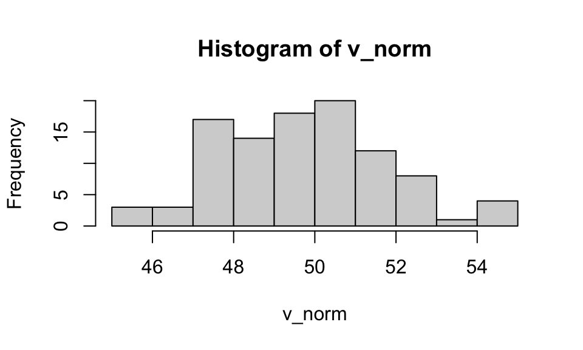

Introduction to R
Goals of the lecture
- Brief tooling.
- Why R?
- Introduction to “base R”.
- Brief preview of the
tidyverse.
Note
Note that today’s lecture will extend to Friday’s in-class lab slot. Depending on whether we have time on Friday, we can also work on the take-hom lab in Friday’s class.
Tooling (briefly)
One of the most frustrating parts of programming is tooling: getting your computer set up to actually do the stuff you want to learn about.
In this class, we’ll be working with the R programming language using a desktop IDE called RStudio.
- Links to download and install RStudio can be found here.
- Follow the instructions: will include downloading and installing R.
- To avoid other tooling headaches, we’ll just be using Canvas for course management.
- We won’t be relying on GitHub, but it’s also very useful and important!
Why R?
There are many different programming languages. Why use R?
Introduction to “base” R
“Base” R just refers to the set of functions and tools available “out of the box”, without using additional packages like
tidyverse.
Base R includes (but is not limited to):
- Basic mechanics like variable assignment.
- Simple functions like
plot, as well as core types like vectors. - Statistical methods like
lmandanova(which we’ll discuss later).
Variable assignment
Variables allow us to store information (values, vectors, etc.) so we can use it again later.
Here, we create a variable called account, so we can add to it.
[1] 45Note
You can also use = for assignment, but <- is the R convention. (For most purposes in this course, it shouldn’t matter which you use, and I sometimes mix them up!)
üí≠ Check-in
Try adding different numbers to account. What do you think will happen if you add a string like 'CSS'?
Basic variable types
Each variable has a certain type or
class.
You can do different things with different types of variables. For instance, you can’t calculate the mean of multiple characters, but you can for numeric types.
| Type | What it is | Example |
|---|---|---|
| numeric | Numbers (integers & decimals) | age <- 25, gpa <- 3.7 |
| character | Text strings | name <- "Alice" |
| logical | TRUE/FALSE values | passed <- TRUE |
| integer | Whole numbers only | count <- 5L |
| factor | Categorical data | grade <- factor("A") |
üí≠ Check-in
Use the typeof() or class() functions to check the type of different variables or values.
Basic Operations with Numeric Variables
numeric variables allow for a number of arithmetic operations (like a calculator).
Vectors: Building Blocks of R
A vector is a collection of elements with the same
class.
Vectors can be created with the c(...) function.
üí≠ Check-in
Create your own vector, this time with character types in it. Try indexing into different parts of the vector.
Working with vectors
Like scalars, numeric vectors can be manipulated mathematically.
[1] 26 31 33[1] 125 150 160[1] 26 32 35üí≠ Check-in
What do you think will happen if you try to add two vectors of different lengths?
Functions
A function implements some operation; you can think of it as a verb applied to some input.
In CSS, you’ll often be using functions to summarize your data (like a vector).
üí≠ Check-in
Create a vector containing possible incomes; then create the mean and median of this vector.
Creating vectors from distributions (pt. 1)
In addition to creating vectors by hand, we can use functions to create random vectors by sampling from some distribution, e.g., a normal distribution (rnorm(x, mean, sd)).

üí≠ Check-in
Try changing the different parameters of rnorm and then plotting the resulting vector again using hist. What do you notice about changing the mean or sd?
Creating vectors from distributions (pt. 2)
There are also many types of distributions beyond normal distributions.
- Uniform distributions: use
runif. - Binomial distributions: use
rbinom. - Poisson distributions: use
rpois. - Sampling from these distributions (and visualizing them) is a helpful way to learn about different statistical distributions.
üí≠ Check-in
Create a uniform distribution with runif with 100 values ranging from 2 to 3. If you’re not sure how to do this, use ?runif to learn more about the function.
Interim summary
So far, we’ve covered a number of core topics in base R.
- Assigning and working with variables.
- Different types of variables.
- Applying functions to variables.
- Creating vectors and visualizing them with
hist. - Sampling from statistical distribution.
üí≠ Check-in
Any questions before we move on to creating dataframes and other kinds of plots?
Dataframes
The
data.frameclass is a “tightly coupled collection of variables”; it’s also a fundamental data structure in R.
- Like a matrix, but with labeled columns of the same length.
- Each column corresponds to a vector of values (numbers, characters, etc.).
- Supports many useful operations.
- Analogous to
pandas.DataFrameinPython!
Note
Note that once we move to the tidyverse, we’ll be working with tibbles, which are basically like a data.frame.
Creating a data.frame
- A
data.framecan be created using thedata.framefunction. - Pass in labeled vectors of the same length.
hours_studied test_score
1 0 70
2 2 85üí≠ Check-in
Try creating your own data.frame with custom columns. For example, one column could be movie_title and another could be your rating of that movie. Make sure the columns are the same length!
Exploring a data.frame
We can use functions like nrow, head, and colnames to learn about our data.frame.
[1] 6[1] "hours_studied" "test_score" hours_studied test_score
1 0 70
2 2 85'data.frame': 6 obs. of 2 variables:
$ hours_studied: num 0 2 2 3 5 8
$ test_score : num 70 85 89 89 94 95
NULL hours_studied test_score
Min. :0.000 Min. :70.00
1st Qu.:2.000 1st Qu.:86.00
Median :2.500 Median :89.00
Mean :3.333 Mean :87.00
3rd Qu.:4.500 3rd Qu.:92.75
Max. :8.000 Max. :95.00 Accessing individual columns
You can access individual columns using the dataframe$column_name syntax.
Filtering a data.frame
In base R, you can filter a data.frame using the df[CONDITION] syntax, where CONDITION corresponds to a logical statement.
hours_studied test_score
4 3 89
5 5 94
6 8 95Note
In the tidyverse, we can use the handy filter function.
Simple bivariate plots
Once you have multiple vectors, you can plot the relationship between them, e.g., using a simple scatterplot.

Calculating correlations
You can also quantify the relationship between variables, e.g., using a Pearson’s r correlation coefficient.
Pearson's product-moment correlation
data: df_example$hours_studied and df_example$test_score
t = 2.8958, df = 4, p-value = 0.0443
alternative hypothesis: true correlation is not equal to 0
95 percent confidence interval:
0.03391115 0.97998161
sample estimates:
cor
0.8228274 Working with missing data
Real data often contains missing values. R represents these as NA (Not Available). We’ll discuss these in more detail next week, but here’s a preview:
Working with missing data (pt. 2)
You can remove missing data by filtering the data.frame, using the syntax below and the is.na condition.
[1] 85 92 78 88Putting it together: simulating data
So far, we’ve discussed a number of useful concepts in R:
- Working with vectors.
- Simulating random distributions using
rnorm. - Creating
data.frameobjects and plotting or analyzing them.
üí≠ Check-in
Now, let’s simulate data.
- First, use
rnormto create a random normal distribution ofparent_heights(use parameters that seem reasonable to you). - Then, create a second variable called
child_heightsthat’s related toparent_heights, ideally with some random error added. (Hint: Think about how a regression line works.). - Put these variables in a
data.frame. - Finally, plot the relationship between those variables and calculate the correlation.
Simulating data
[1] 0.8227182A conceptual preview of the tidyverse
Next week, we’ll discuss the tidyverse: a set of packages and functions developed to make data analysis and visualization in R easier.
This includes (but is not limited to):
- Functions for transforming data, e.g.,
filterormutate. - Functions for merging data, like
left_joinorinner_join. - Functions for visualizing data, like
ggplot.
Lecture wrap-up
This course is not primarily about programming in R, but programming in R is a foundational skill for other parts of this course.
This lecture (and accompanying lab) is intended to give you more comfort with the following concepts:
- Working with variables and different types of data.
- Creating and working with vectors.
- Simple plotting.
- Working with
data.frameobjects.
CSS 211 | UC San Diego